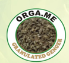

Thé de Pissenlit



Le Thé de Pissenlit ORGA_ME est une infusion douce à base de feuilles et de racines de pissenlit soigneusement sélectionnées, récoltées à l'état sauvage dans les champs préservés du Togo et du Sénégal. Les feuilles et les racines sont cueillies à la main à leur apogée nutritionnelle, puis nettoyées et séchées selon des techniques traditionnelles de séchage à l'ombre qui préservent leur saveur verte et terreuse ainsi que leur légère amertume. Le pissenlit est depuis longtemps apprécié en médecine traditionnelle européenne, asiatique et africaine pour ses qualités purifiantes et sa capacité à soutenir le foie, la digestion et la détoxification générale. Cette tisane est naturellement sans caféine et facile à consommer chaque jour, ce qui la rend adaptée à tous les âges. Chaque lot est soigneusement inspecté pour s'assurer que seules les meilleures feuilles et racines se retrouvent dans votre tasse.
Bénéfices pour le corps
Le Thé de Pissenlit soutient la fonction hépatique et la détoxification naturelle. Il encourage le flux de bile pour une meilleure digestion, soutient la fonction rénale et l'équilibre hydrique, et fournit des vitamines A, C, K, du potassium et du calcium. Ses antioxydants protègent les cellules du stress oxydatif, et sa légère amertume stimule les enzymes digestives. Sans caféine, il est adapté à tout moment et soutient également la santé de la peau, le confort articulaire et une tension artérielle saine.
Comment utiliser
Infusez une cuillère à café de feuilles et racines de pissenlit dans de l'eau chaude pendant 5 à 7 minutes. Filtrez et dégustez chaud ou rafraîchi. Prenez une fois par jour ou après les repas. Ajoutez du miel et du citron pour équilibrer l'amertume. Conservez dans un contenant hermétique dans un endroit frais et sec.
Ingrédients
100% feuilles et racines de pissenlit séchées (Taraxacum officinale) — aucun additif, aucun conservateur, aucune saveur artificielle.